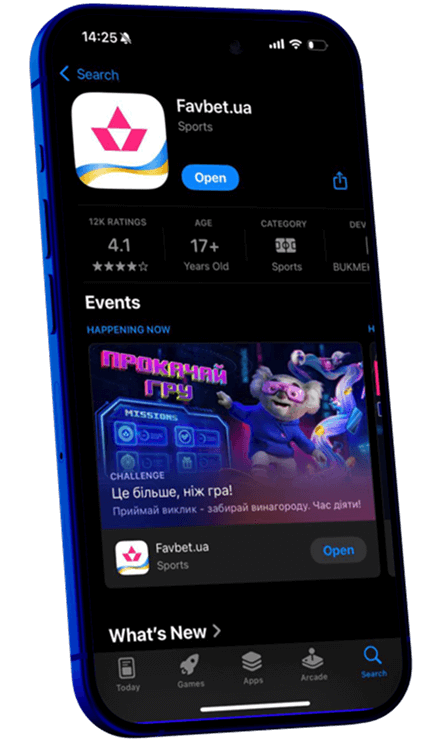
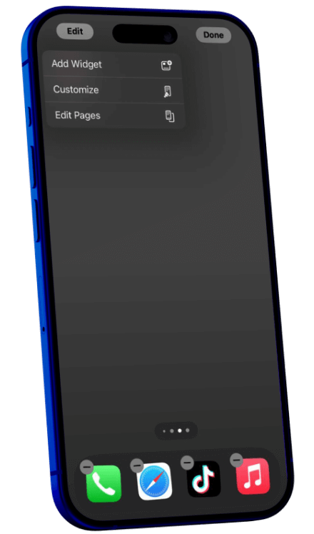
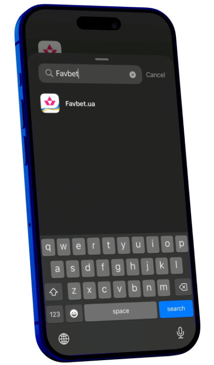
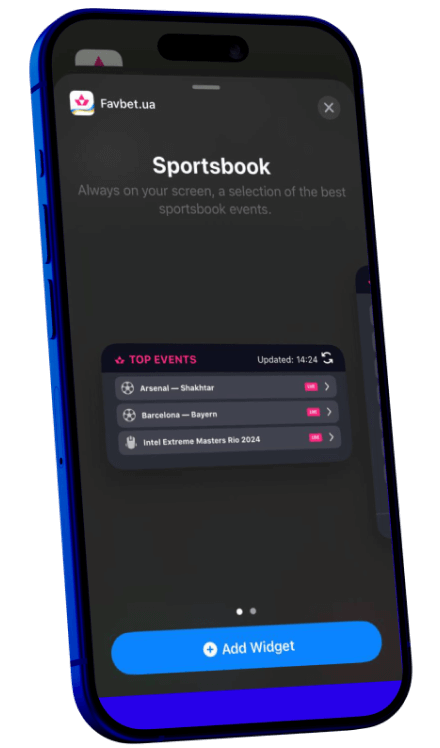

YOUR PORTAL TO THE GAME UNIVERSE
A miniature yet powerful widget that lives on the home screen of your smartphone. In just a few taps — instant access to live info. It’s not just a tool — it’s your companion, becoming a part of your lifestyle.
INSTALL
Up-to-date
information
Automatic
sync with
Favbet
Compact and
expanded widget
formats
Light and dark
mode support
HOW TO INSTALL THE WIDGET?

Step 1
Install the latest version of the Favbet app from the App Store
Scan to download IOS App

Step 2
Tap and hold an empty area on your device's screen

Step 3
Select “Add Widget” and find Favbet in the list of available apps

Step 4
Choose the widget size, move it to the desired location, and tap “Add Widget”